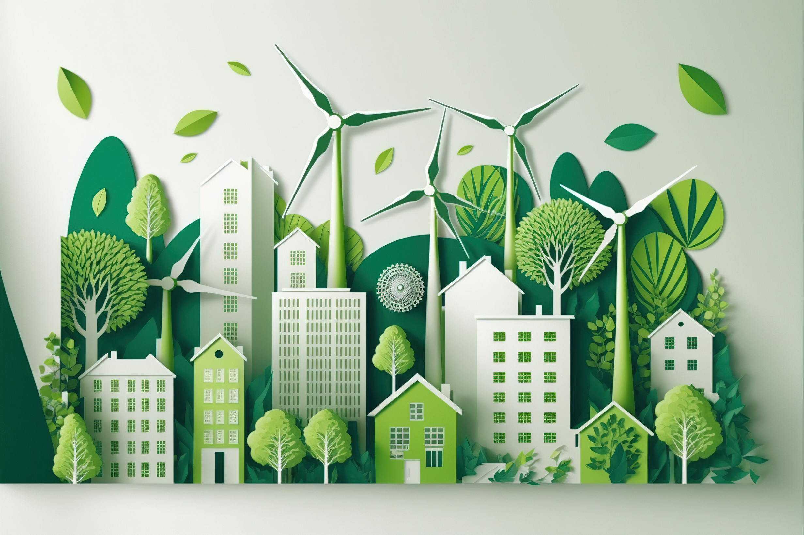
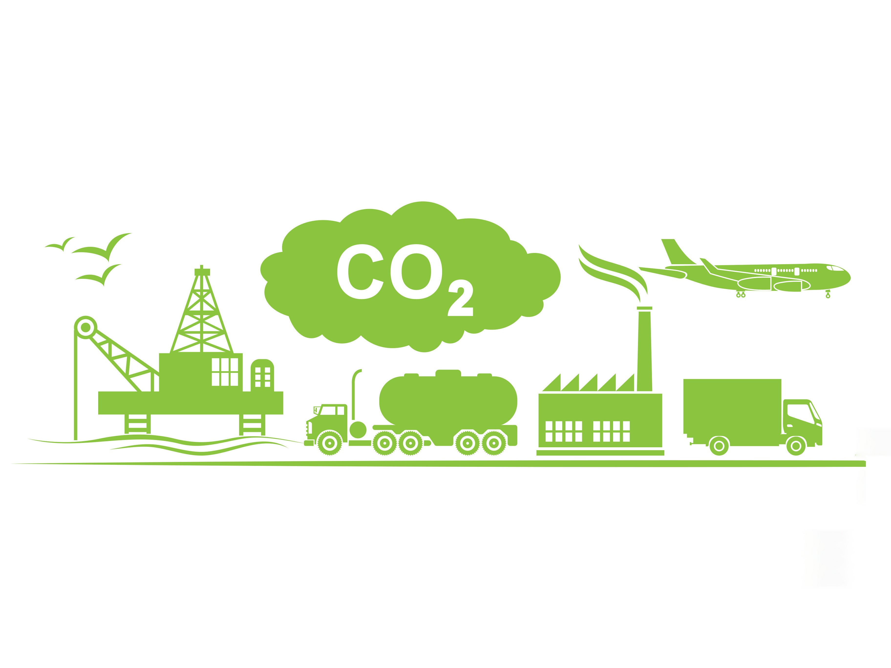
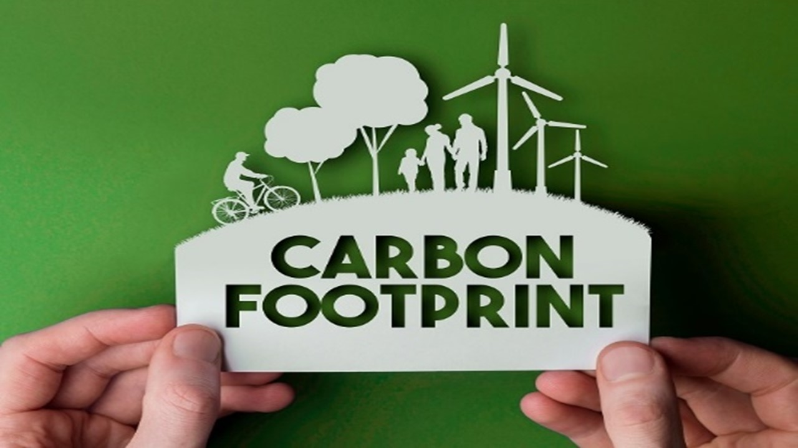
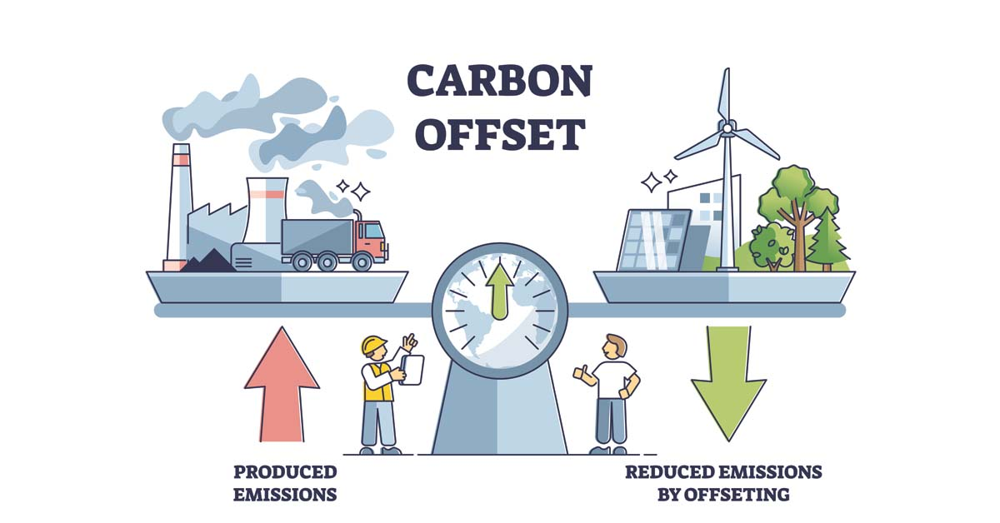

LED Lighting
Switching to LED lighting reduces energy usage and costs. LEDs consume less energy than incandescent bulbs and last longer, providing a cost-effective and eco-friendly lighting solution.
The planet's ecosystems and human societies are seriously threatened by climate change, which is caused by human activities like the combustion of fossil fuels, deforestation, and industrial processes. Comprehending the notion of a carbon footprint is essential for tackling this worldwide issue. The entire amount of greenhouse gases, such as carbon dioxide (CO2), methane (CH4), and nitrous oxide (N2O), released either directly or indirectly as a result of human activity is measured by a carbon footprint. It is an essential indicator for evaluating how individual acts, organizational activities, and industrial processes affect the environment. Individuals and companies can take proactive measures to lower their carbon footprint and lessen the negative effects of global warming by realizing how intertwined human activity is with climate change.
In order to effectively reduce carbon footprint, a deeper understanding of the origins and drivers of carbon emissions is necessary. One major source of carbon emissions is the combustion of fossil fuels for transportation, heating, and electricity generation. Deforestation, industry, and other industrial processes all significantly increase greenhouse gas emissions. Prioritizing mitigation actions can be achieved by individuals and organizations by identifying various sources and evaluating their separate contributions to the overall carbon footprint. Carbon emissions can be significantly reduced, for instance, by promoting sustainable land management techniques, streamlining supply chains, and putting energy-efficient technologies into use.
Initiatives aimed at improving energy efficiency have real chances to lower carbon emissions while also saving money and strengthening energy security. Electricity consumption can be greatly decreased by switching to energy-efficient appliances, such as LED lighting and ENERGY STAR-rated machinery.
Modern HVAC systems, energy-efficient windows, and better insulation all contribute to building retrofits that increase thermal comfort while lowering the need for heating and cooling. By switching to renewable energy sources, such wind turbines and solar photovoltaic panels, carbon emissions are reduced and dependency on fossil fuels is further decreased. For example, adding rooftop solar panels to residential structures helps to create a cleaner and more sustainable energy future while simultaneously lowering home electricity bills.

Switching to LED lighting reduces energy usage and costs. LEDs consume less energy than incandescent bulbs and last longer, providing a cost-effective and eco-friendly lighting solution.
Switch to solar panels for clean energy. They harness sunlight to produce electricity, reducing reliance on fossil fuels and lowering carbon emissions for homes and businesses.
Switch to efficient HVAC systems for comfort and savings. They use advanced tech to cut energy use, lowering costs and emissions for homes and businesses.
The transportation sector represents a significant contributor to carbon emissions, but it also offers ample opportunities for emission reduction through sustainable mobility solutions. Transitioning to low-carbon transportation options, such as electric vehicles, public transit, cycling, and walking, reduces reliance on fossil fuels and curtails emissions. Moreover, smart urban planning, pedestrian-friendly infrastructure, and innovative mobility services facilitate the adoption of sustainable transportation modes. Embracing shared mobility solutions, such as carpooling and ride-sharing, optimizes vehicle utilization and reduces traffic congestion and emissions. By prioritizing sustainable transportation initiatives, we can improve air quality, enhance public health, and mitigate the impacts of climate change.
Embracing sustainable practices encompasses a wide array of actions aimed at minimizing environmental impact and promoting resource conservation across various sectors. From adopting eco-friendly manufacturing processes and utilizing renewable materials to implementing waste reduction strategies and embracing circular economy principles, sustainable practices offer a holistic approach to carbon footprint reduction. By integrating sustainability into supply chain management, product design, and operational processes, businesses can enhance resource efficiency, minimize waste generation, and mitigate environmental degradation. Embracing sustainable practices not only fosters environmental stewardship but also drives innovation, enhances brand reputation, and creates long-term value for stakeholders.
Carbon offsetting provides a mechanism for individuals and organizations to mitigate their carbon footprint by investing in projects that reduce or sequester greenhouse gas emissions. These projects encompass a diverse range of activities, including reforestation, afforestation, renewable energy deployment, methane capture, and energy efficiency initiatives. By purchasing carbon credits generated from such projects, entities can effectively balance out their carbon emissions, achieving carbon neutrality or net-zero emissions status. However, ensuring the integrity and additionality of carbon offset projects is crucial to maximizing their environmental benefits and contributing to sustainable development goals. Through transparent and credible carbon offsetting practices, we can accelerate the transition to a low-carbon economy and mitigate the impacts of climate change.
In conclusion, addressing the complex challenge of carbon footprint reduction requires a multifaceted approach encompassing technological innovation, policy interventions, and individual behavioral changes. By deepening our understanding of the drivers and implications of carbon emissions and embracing a suite of mitigation strategies, we can transition towards a more sustainable and resilient future. From enhancing energy efficiency and promoting sustainable transportation to investing in carbon offsetting initiatives and fostering a culture of sustainability, every action contributes to collective efforts to combat climate change and safeguard the planet for future generations. Together, we can build a greener, more sustainable world for all.